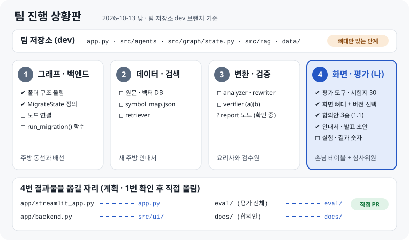
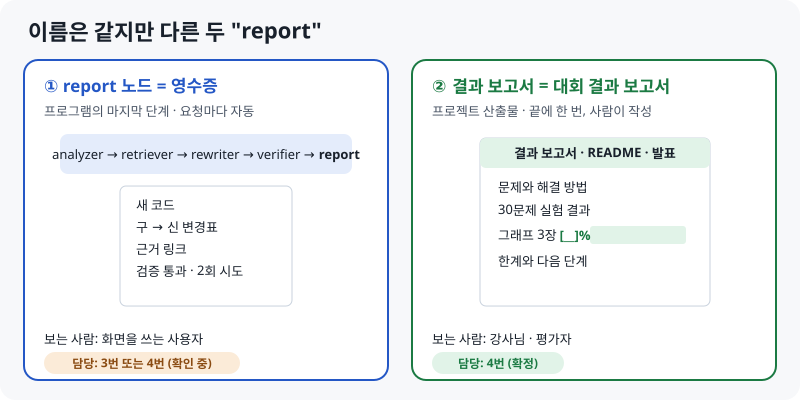
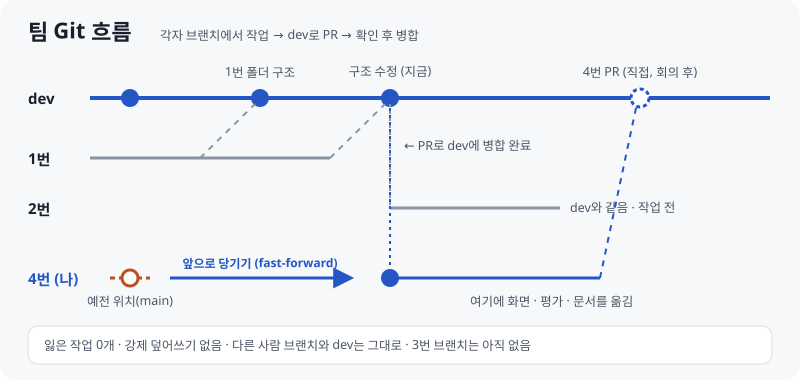

LANGCHAIN 마이그레이션 도우미 · 팀 진행 상황 (역할 번호로 정리)
팀 저장소가 지금 어디까지 왔는지, 팀 대화에서 무엇을 정했는지, 4번(나)이 무엇을 했고 다음에 무엇을 하는지, 오늘 물어본 것을 한곳에 모았습니다.
이것 세 줄만 기억해도 됩니다
MigrateState, 함수 호출)에 맞춰 화면과 합의안 3종을 1.1로 고쳤습니다.1장

| 번호 | 역할 | 팀 저장소에 올라온 것 | 다음 일 |
|---|---|---|---|
| 1번 | 그래프 · 백엔드 | 폴더 구조, MigrateState, 빈 그래프 틀 |
노드 연결, run_migration() 함수 |
| 2번 | 데이터 · 검색 | (아직 없음) | 원문 · 벡터 DB, symbol_map.json, retriever |
| 3번 | 변환 · 검증 | (아직 없음, 브랜치도 없음) | analyzer, rewriter, verifier, (report 노드는 확인 중) |
| 4번 | 화면 · 평가 | (개인 저장소에 있음) | 팀 저장소로 옮기기, 실험, 결과 채우기 |
2장
브랜치
| 브랜치 | 상태 |
|---|---|
main |
처음 만든 상태 그대로 |
dev |
1번이 폴더 구조를 올림 (PR 2개 병합) |
| 1번 작업 브랜치 | dev에 병합 완료 |
| 2번 브랜치 | dev와 같음, 작업 전 |
| 4번 브랜치 | 사용자 요청으로 dev 최신 상태로 앞당김 (fast-forward, 잃은 작업 0개) |
| 3번 브랜치 | 아직 없음 |
dev 안에 있는 것
├── app.py print('Hello World!') ← 화면 자리
├── pyproject.toml uv, Python 3.12, langchain>=1.4.4, langgraph, pydantic
├── .env.example OPENAI_API_KEY
├── data/ 비어 있음
└── src/
├── agents/ analyzer · retriever · rewriter · verifier · report.py (거의 빈 파일)
├── graph/state.py MigrateState
├── graph/supervisor.py 노드 없는 그래프 틀
└── prompt/ rag/ 비어 있음
눈여겨볼 코드: 1번이 만든 MigrateState는 "옛 위치 → 새 위치 + 근거 ID + 최신 방식인지 classic 우회인지"입니다. kind: native / classic_fallback은 평가에서 따로 세는 classic 의존과 같은 구분입니다.
class MigrateState(BaseModel):
old: str
new: str
evidence_id: str
kind: Literal["native", "classic_fallback"]
3장
서비스 정의 (모두 동의): 구버전 코드를 넣고 목표 버전을 골라 실행하면, 새 코드와 검증 과정이 리포트로 나오는 챗봇. 파이프라인 흐름은 1번이 그린 흐름도(오프라인 준비 + 5단계)가 기준입니다.
역할이 정해진 과정
| 순서 | 내용 |
|---|---|
| 1 | 4번이 역할을 "1 그래프 · 백엔드 / 2 데이터 · 검색 / 3 변환 · 검증 / 4 화면 · 평가"로 정리 |
| 2 | 3번은 처음에 "rewriter + verifier"와 "tester + UI"로 나누는 안을 냈고, tester(평가)에 report까지 들어간다고 생각했음 |
| 3 | 3번 의견: 발표에 테스트셋이 들어가고, 비교는 한 사람이 맡아야 함 → 4번이 준비한 평가 방식과 같음 |
| 4 | 1번이 3번에게 UI를 부탁했지만, 3번은 UI 말고는 모두 괜찮다고 함 |
| 5 | 최종: 1 그래프 · 백엔드 / 2 데이터 · 검색 / 3 변환 · 검증 / 4 화면 · 평가 (모두 동의) |
협업 규칙
데이터: 2번은 처음에 벡터 DB만 공유하려다가, 용량이 커서 "스크립트로 각자 만들기"를 생각함 → 1번 의견으로 원문과 벡터 DB를 모두 Git에 올리기로 함.
우선순위: 1번은 "LLM 답변이 잘 나오는지 먼저 확인하고 키우자", 3번은 "산출물 report 폴더는 여유가 있으면"으로 정리됨. 동작하는 최소 버전이 먼저입니다.
아직 정하지 않은 것
| 미정 | 왜 중요한가 |
|---|---|
| report 노드 담당 (3번 또는 4번) | 3번은 처음에 report를 평가 쪽으로 생각했음 |
| 목표 버전을 어떻게 받나 | 모두 "버전 골라서"라고 했지만 설계에 없었음 → 4번이 화면과 합의안에 추가함 |
| 화면이 그래프를 부르는 방법 | HTTP 서버인지, 같은 프로그램 안에서 함수로 부르는지 → 함수 호출을 기본안으로 제안 |
| 병합 담당, 비교 모델 | 평가 공정성(같은 모델)과 PR 순서 |
4장
| 영역 | 개인 저장소에 있는 것 | 상태 |
|---|---|---|
| 평가 | 규칙, 테스트셋 30개, 판정기(import · 속성), 일반 AI 실험기, 우리 시스템 실험기, 그래프, 검사기 2종 | ✅ 도구 완성, ⏳ 실험 전 |
| 화면 | Streamlit 두 탭, 가짜 응답, 연결 상태 배지, 목표 버전 선택 (오늘 추가) | 🟡 뼈대 완성 |
| 팀 약속 | 합의안 3종 + 예시 + 연습용 서버, 1.1로 팀 코드에 맞춤 (오늘) | 🟡 회의에서 공유 |
| 보고서 · README · 발표 | 발표 14장, 안내서 3개, README | 🟡 결과 숫자는 실험 후 |
오늘 팀 코드에 맞춰 고친 것 (1.1)
| 어긋났던 점 | 고친 것 | 확인 |
|---|---|---|
| 목표 버전 선택이 없었음 | 화면에 목표 버전 선택, 요청과 report에 target_version 추가 (지금은 1.x) |
화면 자동 테스트, 형식 검사 통과 |
| 팀에는 FastAPI가 없고 화면이 같은 저장소에 있음 | 함수 호출이 기본안: MIGRATION_FUNC="src.graph.supervisor:run_migration". HTTP는 선택으로 남김 |
가짜 그래프 함수로 화면 · 평가 연결, 오류 안내 확인 |
symbol_map과 MigrateState 이름이 다름 |
파일 모양은 그대로 두고 연결표 추가 (new_import/fallback_import → new, kind) |
합의안 0장 |
| report 노드 담당이 애매함 | 합의안에 "확정 전, 4번이 맡을 수도 있음" 표시 | 회의에서 확인 |
팀 저장소에 옮길 자리 (계획) — 1번에게 확인받은 뒤 4번이 직접 올립니다. 이 구조 그대로 모은 사본이 for_team_repo/에 있어서, 덮어 복사만 하면 됩니다 (바뀌는 기존 파일은 app.py 하나).
| 개인 저장소 | 팀 저장소 |
|---|---|
app/streamlit_app.py |
app.py |
app/backend.py |
src/ui/ |
eval/ (평가 전체) |
eval/ |
docs/ (합의안 · 예시) |
docs/ |
| 화면 의존성 | streamlit을 pyproject.toml에 추가 (uv add streamlit) |
팀에 제안할 것: 빠진 의존성(langchain-openai, qdrant-client), 팀 README의 폴더 구조 정리(4번 담당), 벡터 DB는 GitHub 파일 제한(100MB)이 있어 "만드는 스크립트" 공유나 Git LFS.
5장
아니요, 이름만 같고 다른 것입니다.

| report 노드 | 결과 보고서 | |
|---|---|---|
| 정체 | 파이프라인 ⑤번째 단계 (프로그램) | 프로젝트 결과 문서 |
| 언제 | 코드를 넣을 때마다 자동으로 | 프로젝트 끝에 한 번 |
| 내용 | 새 코드, 변경표, 근거 링크, 검증 결과, 시도 횟수 | 문제, 해결, 실험 결과, 한계, 결론 |
| 주방 비유 | 요리와 함께 나오는 영수증 · 원산지 표시 | 대회가 끝난 뒤 쓰는 결과 보고서 |
| 담당 | 3번 또는 4번 (확인 중) | 4번 (확정) |
회의에서 이렇게 물어보면 됩니다: "report가 두 가지라서요. ① report 노드는 화면에 보여 줄 모양을 제가 정했으니 제가 맡아도 괜찮아요. ② 결과 보고서는 제가 쓸게요. 말씀하신 '산출물 report 폴더'는 변환 결과를 파일로 쌓아 두는 폴더인가요?"
dev 최신 상태로 앞당겼습니다 (사용자 요청). 4번 브랜치에만 있던 커밋이 0개라서, 강제로 덮어쓰지 않고 위치만 앞으로 옮겼습니다. 열려 있던 PR(1번 브랜치 → 4번 브랜치)은 자동으로 "병합됨"이 되었습니다.

이 일 이후 원칙: 팀 저장소는 개인 저장소 작업에서 건드리지 않습니다 (4번 브랜치 포함). 팀 저장소에 올리는 일은 4번이 직접 합니다.
cd 폴더 && uv sync가 PowerShell에서 에러가 나요Windows PowerShell 5.1은 &&로 명령을 이어 붙일 수 없습니다. 한 줄씩 따로 실행하면 됩니다.
git clone -b <4번 브랜치> https://github.com/SKNETWORKS-FAMILY-AICAMP/SKN35-3rd-4Team.git
cd SKN35-3rd-4Team
uv sync
git branch # * <4번 브랜치> 가 보이면 됨
| 증상 | 원인 | 해결 |
|---|---|---|
'&&' 토큰은 이 버전에서 올바른 문 구분 기호가 아닙니다 |
PowerShell 5.1 문법 | 한 줄씩 실행하거나 ; 사용 |
다른 Git 폴더(eq-test) 안에 내려받음 |
내려받을 때 있던 위치 | 바탕화면으로 옮기기: 상위 폴더에서 Move-Item .\eq-test\SKN35-3rd-4Team . |
| 개인 저장소 (이 저장소) | 팀 저장소 | |
|---|---|---|
| 용도 | 4번 작업장 · 기록 · 안내서 · 발표 사본 | 팀 제출용 코드 |
| 누가 바꾸나 | 4번 (AI 도움 포함) | 각 담당자가 직접, PR로 |
| 공개 범위 | 공개 → 팀원 이름 · 대화 원문은 넣지 않음, 역할 번호만 | 팀 |
6장
바뀜 (2026-10-13): 처음에는 "평가 도구랑 화면 뼈대는 거의 만들어 뒀어요"로 시작하려 했지만, 팀 순서(1 · 2번 다음 4번)를 무시하는 것처럼 들려서 쓰지 않습니다. 대본과 질문은 05 처음부터 다시 보기 5장을 봅니다.
7장
| 순서 | 할 일 | 언제 |
|---|---|---|
| 1 | 팀 저장소를 바탕화면으로 옮기고 uv sync |
회의 전 |
| 2 | 13:40 회의에서 6장 안건 공유 | 점심 |
| 3 | 팀이 정한 내용에 맞춰 4번 1단계(평가 규칙 · 시험지 · 일반 AI 실험) 시작 | 회의 후 |
| 4 | 1 · 2번 결과가 나오면 팀 저장소에서 화면 · 평가를 새로 만들기 (개인 초안은 참고만) | 1 · 2번 다음 |
| 5 | 3번과 검증 범위 · 채점 기준 맞추기 (질문으로) | 3번 작업 중 |
| 6 | 팀 그래프가 나오면 MIGRATION_FUNC로 화면 연결 → 실험 → 결과 채우기 |
이후 |
8장
답을 누르면 바로 알려 줍니다.
9장
체크한 내용은 이 브라우저에만 저장됩니다.